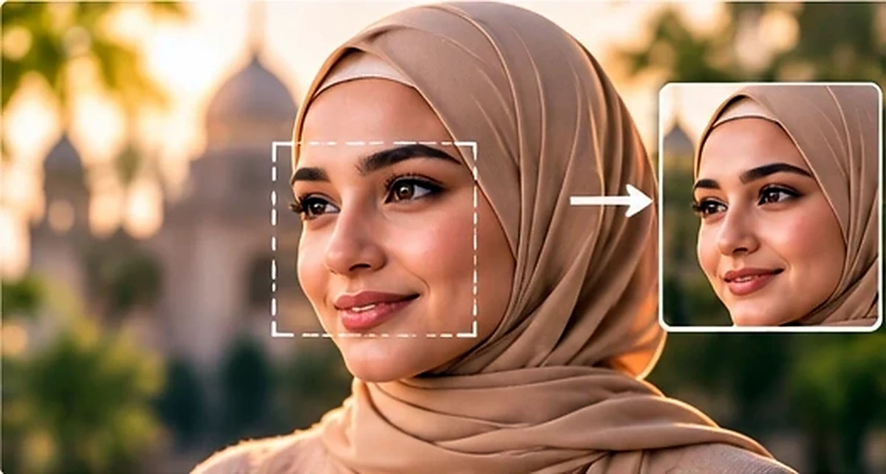
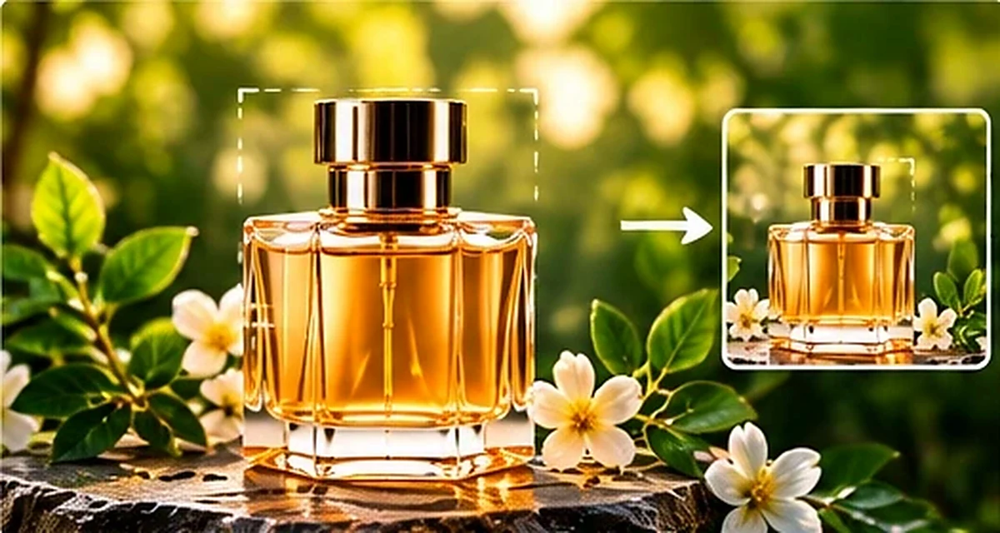
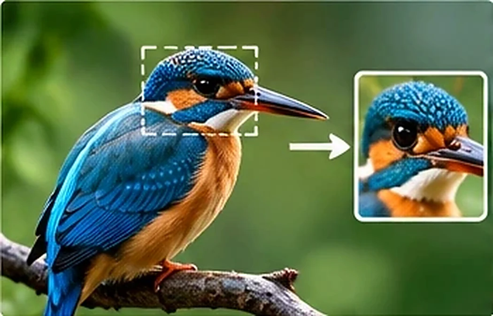
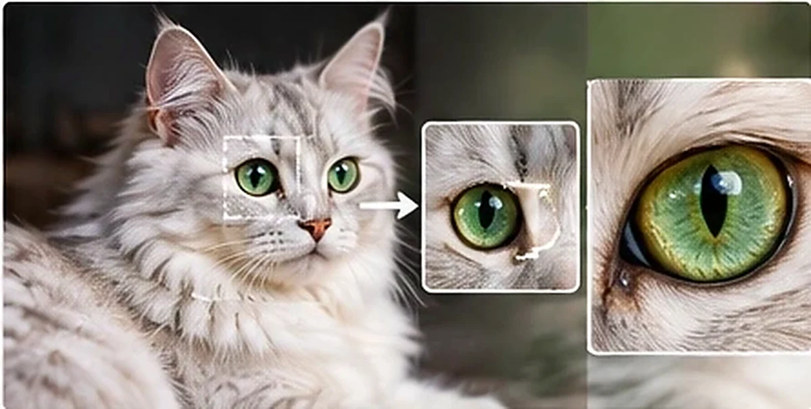
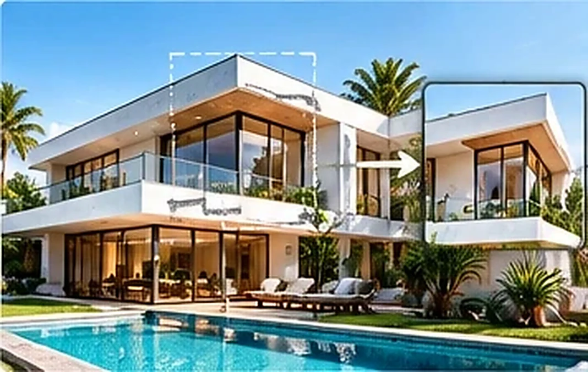
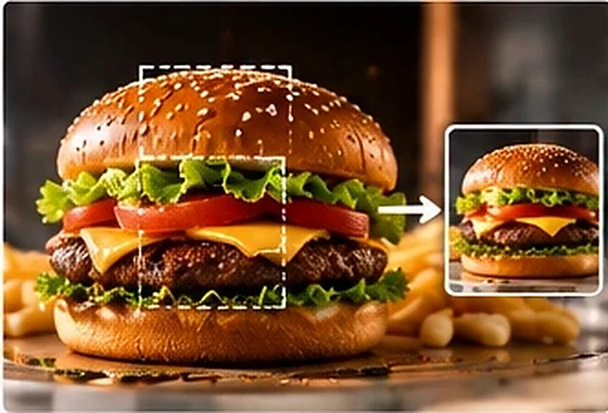
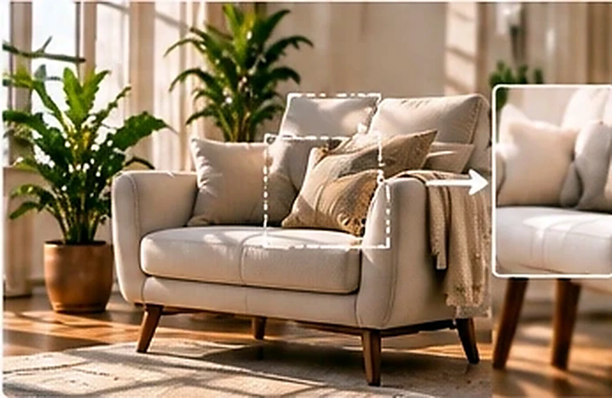
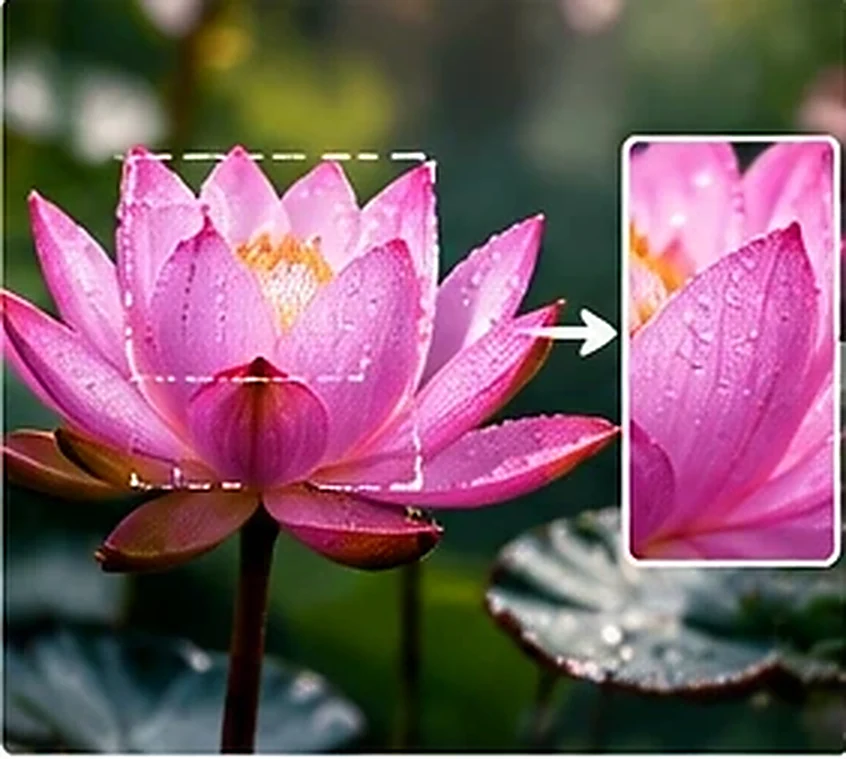
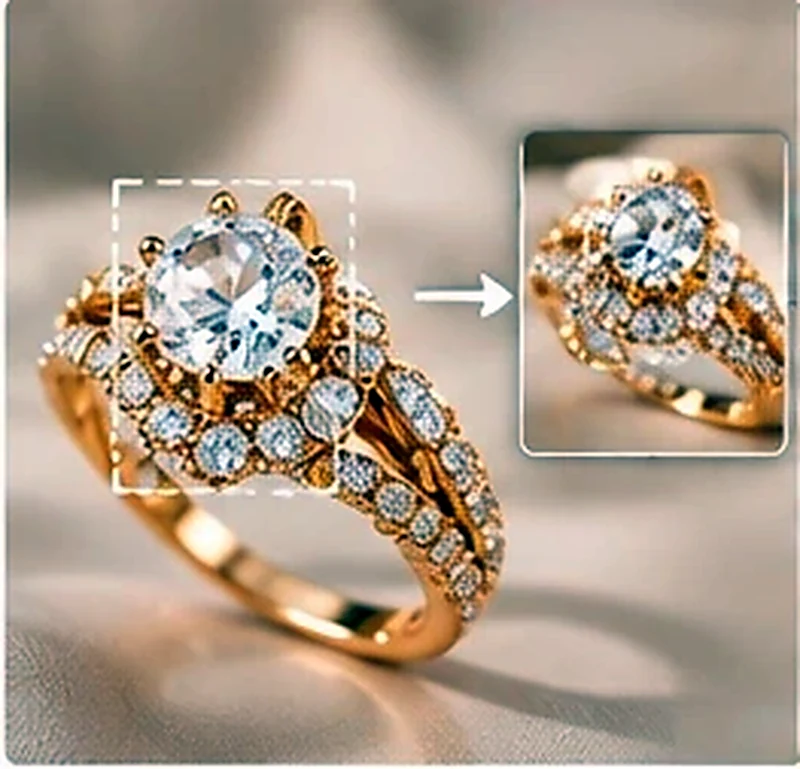
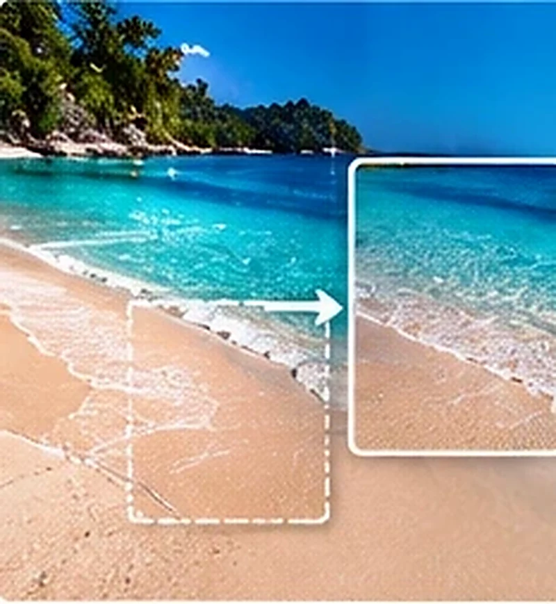

كبّر الصور الصغيرة وحسّن حدّتها وألوانها وقلّل الضجيج، أو اختر مقاس فيسبوك أو إنستغرام أو تيك توك أو غوغل ليُملأ الفراغ بامتداد مموّه مجاني. كل شيء داخل متصفحك.

صور توضيحية لفكرة القص والتكبير، وليست نتائج فعلية من الأداة.









«تحسين الجودة» للتكبير والحدّة والضجيج، و«تغيير المقاس والتوسيع» لمقاس المنصة. وللتوسيع بمحتوى جديد من الذكاء توجد أداة «توسيع الخلفية الذكي».
الصور في هذه الصفحة توضيحية لأنواع النتائج، ولا تمثل نتيجة مضمونة لكل صورة.
من الصورة إلى النتيجة في دقائق.
في المحرّر أو في أدوات الصور.
واضبط الحدّة والضجيج.
ويحل الناتج مكان الصورة.
التكبير والحدّة والضجيج والمقاس.
إجابات سريعة عن أكثر ما يُسأل.
لا؛ يكبّر ويحسّن الحدّة بمعالجة محلية دون اختراع تفاصيل، فالصورة الصغيرة جداً تبقى أنعم من الأصل العالي الدقة.
نعم، تعمل داخل متصفحك بلا مفتاح.
من «تغيير المقاس والتوسيع» اختر مقاس المنصة ثم «تغيير المقاس بلا ذكاء»، أو «توسيع ذكي» (يحتاج Alyssum API) لملء الفراغ بمحتوى جديد.
نعم، من «معالجة الدفعات» في أدوات الصور.